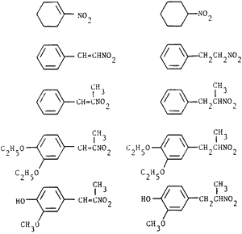

HTML by Rhodium
α,β-Unsaturated nitroalkenes are rapidly and selectively reduced at room temperature to nitroalkanes in high yields by sodium borohydride in a tetrahydrofuran-methanol solvent system.
In a continuation of our studies1 of the reduction of α,β-unsaturated nitroalkenes, we recently described an improved procedure2 for the preparation of nitroalkanes from conjugated nitroalkenes using trialkylborohydrides. The new procedure possesses distinct advantages over conventional methods which involve reducing agents3-6 such as sodium borohydride (NaBH4) and lithium aluminum hydride (LiAlH4). These advantages include improved yields and shorter reaction times. However the separation of the boron derived by-products from the desired products is often cumbersome.
Recently7, it was demonstrated that the reducing power of LiBH4 and of NaBH4 is enhanced by the addition of methanol to the usual (ethereal) solvent system. Such mixed solvent systems have been advantageously employed for the chemoselective reduction of esters8 and the asymmetric reduction of chiral α-keto-amides.9 Methanol apparently reacts with NaBH4 to form methoxyborohydride species in addition to playing a role as a protic solvent.10 The reported reactions involve the addition of methanol to a refluxing mixture of tetrahydrofuran (THF), substrate, and sodium borohydride. Since the reaction3-6 of nitroalkenes with NaBH4 generally produces Michael adducts (especially with β-nitrostyrene derivatives4,5), we decided to minimize side reactions by slowly adding NaBH4 to the nitroalkene dissolved in THF-methanol (10:1, v/v). The reactions were complete within 40 min at room temperature (the reaction could be monitored by the disappearance of the yellow color of the nitroalkene).
Table I.
Reduction of α,β-Unsaturated Nitroalkenes to Nitroalkanes
Nitroalkene |
Producta |
Yieldb |
Ref. |
|  | 62% | ||
64% | |||
82% | |||
75% | |||
69%c |
|||
Notes:
Thus α,β-unsaturated nitroalkenes can be reduced rapidly and selectively in high yields by sodium borohydride in a THF-MeOH solvent system at room temperature. The results are summarized in Table I. The low moisture sensitivity, ease of manipulation of the readily available sodium borohydride, shorter reaction time, and efficiency of this procedure make it an especially practical route to a variety of nitroalkanes under mild conditions.
Attempts were made to detect the formation of methoxyborohydride derivatives by running the reaction in a diglyme-methanol solvent mixture (NaBH4 is soluble in diglyme whereas it is essentially insoluble in THF). 11B-NMR analyses of these reaction mixtures indicated that the sodium borohydride (-42.1 ppm) disappeared over a period of 40 min. However, only a weak signal at +6.0 ppm (referenced to BF3�Et2O) was observed. A stronger signal at +3.0 ppm grew steadily during this period. These results suggest that trimethoxyborohydride (+6.0 ppm) is more reactive than the sodium borohydride (-42.1 ppm). The trimethoxyborohydride apparently reacts with nitroalkene (to yield the product) or with excess methanol to form tetramethoxyborate (+3.0 ppm) as quickly as it is formed.
Commercially available 1-nitro-1-cyclohexene (Aldrich) was used as obtained. All other nitroalkenes were prepared by literature procedures." The products were characterized by their physical properties and spectral characteristic (1H-NMR, 13C-NMR etc.). NMR spectra were recorded on a JEOL-FX 90Q spectrometer and referenced to boron trifluoride-etherate.
The reduction of β-methyl-β-nitrostyrene is representative of the procedure employed.
β-Methyl-β-nitrostyrene (2 mmol, 0.33 g) was weighed in a 50 mL Erlenmeyer flask containing a magnetic stirring bar and then 10 mL of a mixed solvent system of THF-methanol (10:1, v/v) was added at room temperature. Sodium borohydride (2.5 mmol, 0.095 g) was then added, in four portions, to the well stirred solution. A mildly exothermic reaction ensued with the gradual disappearance of the yellow coloration (nitroalkene). The reaction mixture was stirred for 40 min. at room temperture and then quenched with water (20 mL). The volatile solvents were removed on a rotary evaporator and the turbid aqueous layer was extracted with ether (3x25 mL). The combined ether layers were washed successively with water and brine, dried over anhydrous MgSO4 and the solvent removed under reduced pressure. Nearly pure product was obtained which could be purified by passing it through a short column of silica gel (2% ether/petroleum ether eluant) to yield 0.135 g (82%) of 2-nitro-1-phenylethane. The product exhibited physical properties3 and spectral characteristics12 in accord with an authentic sample.